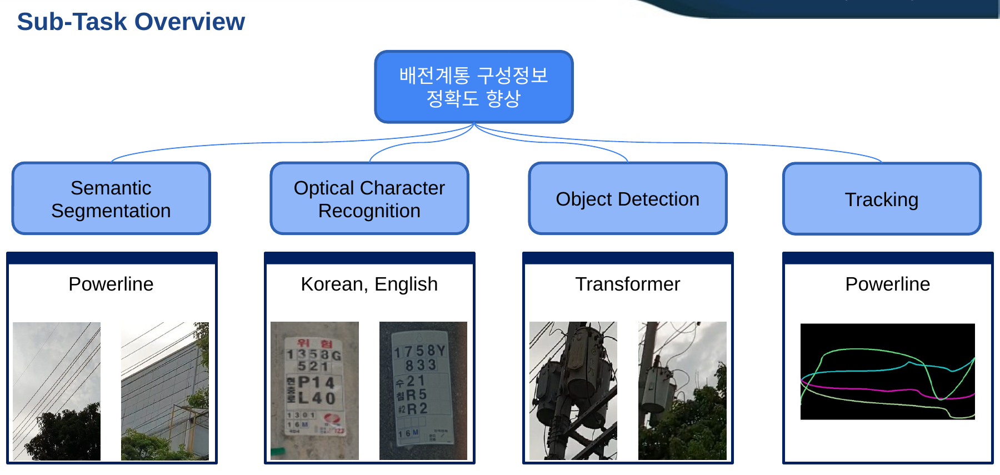
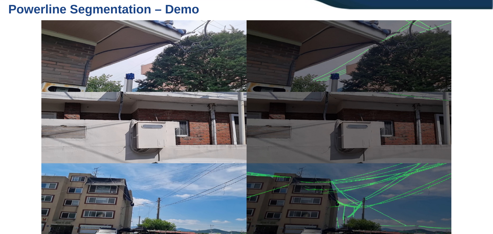
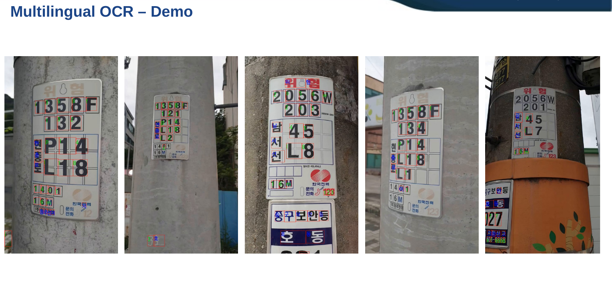
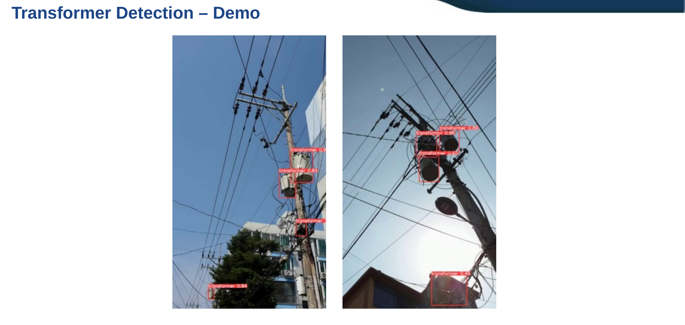

OCR 및 AI 기술을 활용한 배전계통 구성정보 정확도 향상 연구
배전 설비 점검 영상에서 전선·전주 문자·변압기를 자동 인식하기 위해 전선 Semantic Segmentation, 다국어 OCR, 변압기 Object Detection 세 가지 비전 모델을 개발하여 배전계통 구성정보의 디지털화 정확도를 높인 한국전력공사 전력연구원 2개년 과제.
Overview
본 과제는 한국전력공사 전력연구원(KEPRI) 주관으로 2021년 2월부터 2023년 1월까지 2개년에 걸쳐 수행되었습니다. 전주·전선·변압기 등 옥외 배전 설비를 촬영한 점검 영상으로부터 배전계통의 구성정보를 자동으로 추출·검증하여, 사람이 수기로 관리하던 설비 대장 정보의 디지털화 정확도를 높이는 것을 목표로 합니다.
「배전계통 구성정보 정확도 향상」이라는 목표를 전선 Semantic Segmentation, 다국어 OCR(전주 명판·번호 인식), 변압기 Object Detection, 그리고 전선 Tracking의 세부 기술로 분해하여 접근하였습니다. 야외 촬영 특성상 발생하는 다양한 촬영 도메인, 전경·배경의 극심한 클래스 불균형(long-tail), 전선처럼 얇은 객체 등 현장 데이터의 난점에 강인하도록 각 모델을 설계하였습니다.

Approach
- 점검 영상 촬영 → 프레임 추출 → 가공·라벨링 파이프라인으로 powerline-segmentation, multilingual-ocr, transformer-detection 3종 데이터셋을 구축
- 전선 Segmentation: ConvNeXt·Swin Transformer 백본 기반 분할 모델에 weighted cross-entropy로 클래스 불균형을 완화하고, geometric·photometric augmentation, multi-loss(+dice loss), auxiliary decoder를 결합해 얇은 전선의 분할 성능을 향상
- 다국어 OCR: 자체 보유 기술인 Shade Generator·Deform-and-Recover 기반의 노이즈 강인 학습과, 한국어·영어 동시 인식을 위한 auxiliary classification model을 인식 모델과 융합하여 다국어 OCR 모델을 구성
- 다국어 OCR 고도화: pixel-distribution 기반 전처리와 confidence sampling을 적용해 추론 단계의 글자 인식 성능을 추가로 개선
- 변압기 Detection: SOTA급 YOLOX를 기반으로 변압기 검출 모델을 구성하고, 실시간 추론을 위한 모델 크기 변형과 Mixup·CutMix·Mosaic·Copy-paste 증강으로 소규모 데이터셋에서의 성능을 확보
Methods & Tech
Results
전선 Semantic Segmentation은 ConvNeXt-L 백본 기준 mIoU 63.83%를 기록하여, 배경이 압도적으로 많은 long-tail 환경에서도 얇은 전선을 안정적으로 분할함을 확인하였습니다.
| Backbone | Powerline | Unlabeled | mIoU |
|---|---|---|---|
| ConvNeXt-L | 29.73 | 97.93 | 63.83 |
| Swin-L | 24.43 | 95.95 | 60.19 |

다국어 OCR은 한국어 인식 정확도 97.42%, 영어 77.6%로 평균 정확도(mAcc) 87.51%를 달성하였습니다.
| Class | Accuracy |
|---|---|
| Korean | 97.42 |
| English | 77.60 |
| mAcc. | 87.51 |

변압기 Object Detection은 YOLOX 기반 모델로 mAP 0.75를 기록하였습니다. 세 모델 모두 실제 배전 설비 점검 영상에 대한 데모로 현장 적용 가능성을 검증하였습니다.
| Class | mAP |
|---|---|
| Transformer | 0.75 |

후속 연구로는 분할 성능을 높이기 위한 dense prediction 모듈 개발, 전선 재인식(re-identification)을 위한 가상 데이터 수집·전처리 및 방법론 연구, 그리고 시간 축 정보를 활용한 전선 추적(Tracking) 성능 향상 기법을 과제로 제시하였습니다.